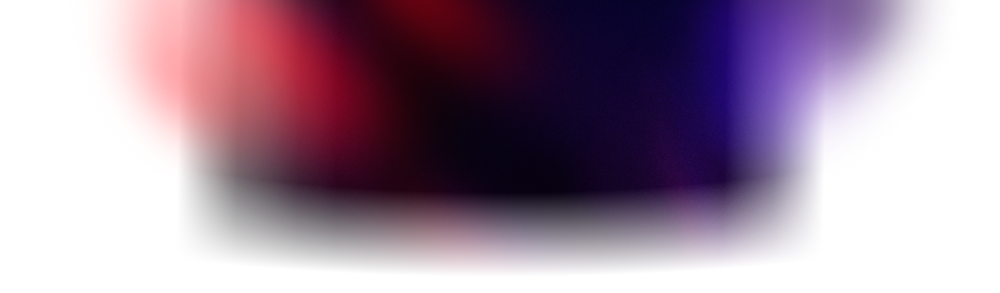

<template id="beat-4-cta-template">
  <div data-composition-id="beat-4-cta" data-width="1920" data-height="1080" data-start="0" data-duration="3.0">

    <!-- BG: Coral light streaks -->
    <div class="bg-streaks">
      
    </div>

    <!-- FG: Logo + CTA stack -->
    <div class="cta-stack">
      <div class="logo-wrap">
        <svg viewBox="0 0 48 48" width="180" height="180">
          <path fill="#FF6363" fill-rule="evenodd" d="M12 30.99V36L-.01 23.99l2.516-2.499zM17.01 36H12l12.011 12.01 2.506-2.505zm28.487-9.497L48 24 24 0l-2.503 2.503L30.98 12h-5.732l-6.62-6.614-2.506 2.503 4.122 4.122h-2.869v18.625H36V27.77l4.122 4.122 2.503-2.506L36 22.747v-5.732zM13.253 10.747l-2.503 2.506 2.686 2.686 2.503-2.506zm21.314 21.314-2.495 2.503 2.686 2.686 2.506-2.503zM7.878 16.121l-2.503 2.504L12 25.253v-5.012zM27.756 36h-5.009l6.628 6.625 2.503-2.503z" clip-rule="evenodd"/>
        </svg>
      </div>

      <div class="cta-button">Download for Mac</div>

      <div class="platform-label">macOS 13+ &middot; Free</div>
    </div>

    <style>
      @import url('https://fonts.googleapis.com/css2?family=Inter:wght@400;600;700&display=block');

      [data-composition-id="beat-4-cta"] {
        margin: 0;
        padding: 0;
        width: 1920px;
        height: 1080px;
        overflow: hidden;
        position: relative;
        background: #07080A;
        font-family: 'Inter', sans-serif;
      }

      [data-composition-id="beat-4-cta"] .bg-streaks {
        position: absolute;
        inset: 0;
        z-index: 1;
        width: 1920px;
        height: 1080px;
        overflow: hidden;
        opacity: 0;
      }

      [data-composition-id="beat-4-cta"] .bg-streaks img {
        width: 120%;
        height: 100%;
        object-fit: cover;
      }

      [data-composition-id="beat-4-cta"] .cta-stack {
        position: absolute;
        inset: 0;
        z-index: 10;
        display: flex;
        flex-direction: column;
        align-items: center;
        justify-content: center;
        gap: 0;
      }

      [data-composition-id="beat-4-cta"] .logo-wrap {
        opacity: 0;
        margin-bottom: 40px;
      }

      [data-composition-id="beat-4-cta"] .cta-button {
        display: flex;
        align-items: center;
        justify-content: center;
        height: 52px;
        padding: 0 32px;
        background: #FFFFFF;
        color: #07080A;
        font-family: 'Inter', sans-serif;
        font-weight: 600;
        font-size: 20px;
        border: none;
        border-radius: 8px;
        cursor: pointer;
        opacity: 0;
        margin-bottom: 20px;
        letter-spacing: -0.01em;
      }

      [data-composition-id="beat-4-cta"] .platform-label {
        font-family: 'Geist Mono', monospace;
        font-size: 16px;
        color: #6A6B6C;
        opacity: 0;
        letter-spacing: 0.02em;
      }
    </style>
    <script src="https://cdn.jsdelivr.net/npm/gsap@3.14.2/dist/gsap.min.js"></script>
    <script>
    (function () {
      window.__timelines = window.__timelines || {};
      var tl = gsap.timeline({ paused: true });
      var scope = '[data-composition-id="beat-4-cta"]';

      tl.fromTo(
        scope + ' .bg-streaks',
        { opacity: 0 },
        { opacity: 0.6, duration: 0.4, ease: 'power2.out' },
        0
      );
      tl.fromTo(
        scope + ' .bg-streaks img',
        { x: 0 },
        { x: 30, duration: 3.0, ease: 'none' },
        0
      );

      tl.fromTo(
        scope + ' .logo-wrap',
        { scale: 0.85, opacity: 0 },
        { scale: 1, opacity: 1, duration: 0.35, ease: 'power2.out' },
        0.10
      );

      tl.fromTo(
        scope + ' .cta-button',
        { y: 20, opacity: 0 },
        { y: 0, opacity: 1, duration: 0.25, ease: 'power2.out' },
        0.50
      );

      tl.fromTo(
        scope + ' .platform-label',
        { opacity: 0 },
        { opacity: 1, duration: 0.2, ease: 'power2.out' },
        0.75
      );

      tl.to(
        scope + ' .cta-stack',
        { opacity: 0, duration: 0.5, ease: 'power2.in' },
        2.50
      );
      tl.to(
        scope + ' .bg-streaks',
        { opacity: 0, duration: 0.5, ease: 'power2.in' },
        2.50
      );

      window.__timelines['beat-4-cta'] = tl;
    })();
    </script>
  </div>
</template>
